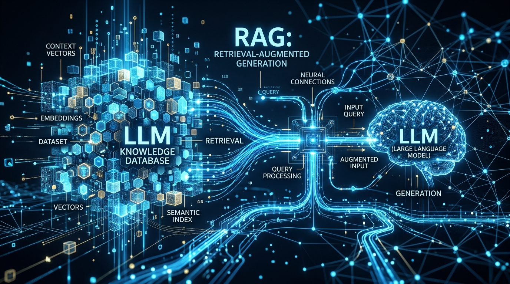

RAG & LLM
Implementasi RAG untuk Keamanan Data Internal Perusahaan
Panduan praktis menghubungkan dokumen rahasia enterprise ke model LLM tanpa kebocoran data ke server publik.
Dr. Arisandi
4 min
Selengkapnya